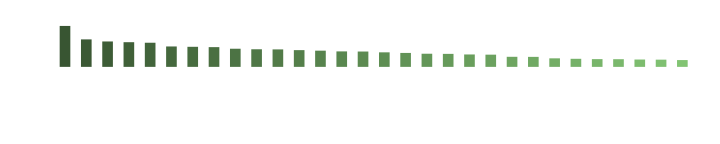
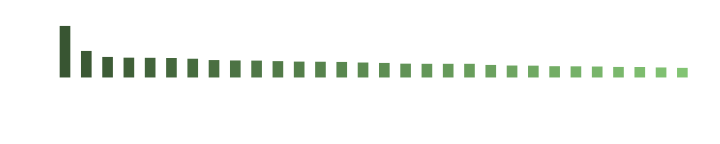
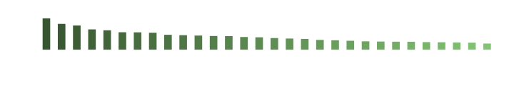

Introduces the concept of word vectors and their use in measures of text similarity.
Built with R 4.3.1 on August 13 2023
A vector in this context is any set of values that represent one thing, so word vectors are fundamental to a bag-of-words framework. Usually, “word vectors” refers to sets of loadings onto calculated or learned latent dimensions (factors, clusters, components), but as part of a bag-of-words framework, vectors can range from those in a standard document-term matrix (as term counts within or between documents), to weightings and reductions of that space.
When loadings onto dimensions, sets of word vectors are sometimes called something along the lines of latent semantic spaces, embeddings, or distributed word representations. Latent loosely refers to the way information is stored within a dimension (the same concept as in factor or cluster analysis generally, as in Latent Dirichlet Allocation). Semantic refers to the word meanings that can be captured by dimensions, as seen in similarity between word vectors; the word’s more precise meaning is represented across dimensions of more general and more latent meaning (in which sense it is also a distributed representation, though that could apply to any vector representation). Embedding either generally refers to the way word vectors are contained within the broader vector space, or, more specifically, to the way word meanings are contained within the broader semantic space.
In-sample vectors
The introduction mostly focused on the representation of documents as vectors within a common document-term space. With that same representation, we can focus on the term vectors instead.
library(splot)
library(lingmatch)
texts <- c(
"Frogs are small.",
"Crickets are small.",
"Horses are big.",
"Whales are big."
)
(dtm <- lma_dtm(texts))
#> 4 x 7 sparse Matrix of class "dgCMatrix"
#> are big crickets frogs horses small whales
#> [1,] 1 . . 1 . 1 .
#> [2,] 1 . 1 . . 1 .
#> [3,] 1 1 . . 1 . .
#> [4,] 1 1 . . . . 1Here, columns represent words in terms of their occurrence in 4 contexts (here, sentences), and rows provide co-occurrence information.
Similarity-based latent dimensions
Comparing word vectors can provide semantic information. For example, we can see which animals co-occur with different attributes:
# the t function transposes the document-term matrix
# such that terms are in rows and documents in columns
tdm <- t(dtm)
(attribute_loadings <- lma_simets(tdm, tdm[c("small", "big"), ], "canberra"))
#> 7 x 2 sparse Matrix of class "dgCMatrix"
#> small big
#> are 0.50 0.50
#> big 0.00 1.00
#> crickets 0.75 0.25
#> frogs 0.75 0.25
#> horses 0.25 0.75
#> small 1.00 0.00
#> whales 0.25 0.75
# note that dark = TRUE makes the text white, so you might need to remove it
splot(
attribute_loadings[, 1] ~ attribute_loadings[, 2],
type = "scatter",
lines = FALSE, laby = "smallness", labx = "bigness", dark = TRUE,
add = text(
y + .05 + c(0, 0, 0, -.09, 0, 0, -.09) ~ x,
labels = rownames(attribute_loadings)
)
)
The similarity measures between raw occurrence vectors form new, collapsed vectors—instead of corresponding to documents, columns in this new space represent attributes. These new vectors can then be used to make document comparisons more flexible.
# documents are already similar as expected
# (with 1 <-> 2 and 3 <-> 4 being more, the rest less similar)
# due to their overlap in the attribute words
lma_simets(dtm, "canberra")
#> 4 x 4 sparse Matrix of class "dtCMatrix" (unitriangular)
#>
#> [1,] I . . .
#> [2,] 0.7142857 I . .
#> [3,] 0.4285714 0.4285714 I .
#> [4,] 0.4285714 0.4285714 0.7142857 I
# but mapping them to the attribute space
# (dtm %*% space, forming a Document-Dimension Matrix)
(ddm <- lma_lspace(dtm, space = attribute_loadings))
#> 4 x 2 sparse Matrix of class "dgCMatrix"
#> small big
#> [1,] 2.25 0.75
#> [2,] 2.25 0.75
#> [3,] 0.75 2.25
#> [4,] 0.75 2.25
# the similarity between animal words can also contribute
lma_simets(ddm, "canberra")
#> 4 x 4 sparse Matrix of class "dtCMatrix" (unitriangular)
#>
#> [1,] I . . .
#> [2,] 1.0 I . .
#> [3,] 0.5 0.5 I .
#> [4,] 0.5 0.5 1 IPretrained vectors
This is a very tidy and narrow example in terms of the texts and semantic space creation, but it illustrates the kind of co-occurrence information that is being used in more abstracted examples. To get appropriate co-occurrence information for a larger set of words, you need many and diverse observations of their use, which is why large corpora are usually used to train embeddings. The latent dimensions of general-use spaces are also not usually similarities to single seed words, but are instead optimized, such as by some form of matrix factorization or a neural network.
Pretrained spaces like this are available on Open Science Framework
(osf.io/489he), and will be
downloaded if necessary when you run the functions that depend on them
if you specify a directory or set the directory options (you can run
lma_initdirs('~') to initialize the default locations).
Embeddings-mapped similarity
Similarity between documents that have been mapped to embeddings is sometimes called Latent Semantic Similarity (Landauer & Dumais, 1997) or Word Centroid (inverse) Distance (Kusner et al., 2015). Both of these measures have common parameter decisions associated with them.
For Latent Semantic Similarity, the Document-Term Matrix is usually
initially weighted (as by Term-Frequency Inverse Document Frequency or
Pointwise Mutual Information schemes), and has stop words removed
(though that isn’t relevant in this case, since “are” appears in all
documents), then mapped to a Singular Value Decomposition space, and
similarity is measured by cosine similarity. These settings are default
for the 'lsa' type (using the “100k_lsa” space):
lingmatch(texts, type = "lsa")$sim
#> 4 x 4 sparse Matrix of class "dtCMatrix" (unitriangular)
#>
#> [1,] I . . .
#> [2,] 0.9958587 I . .
#> [3,] 0.3360165 0.3182474 I .
#> [4,] 0.4092065 0.3831958 0.751225 IFor Word Centroid Distance, the DTM usually also has stop words removed, but might then be frequency weighted (normalized), mapped to a word2vec space, and have distances measured by Euclidean distance (which is inverted here for similarity):
lingmatch(
texts,
exclude = "function", weight = "freq",
space = "google", metric = "euclidean"
)$sim
#> 4 x 4 sparse Matrix of class "dtCMatrix" (unitriangular)
#>
#> [1,] I . . .
#> [2,] 0.01980396 I . .
#> [3,] 0.01233601 0.01213053 I .
#> [4,] 0.01169420 0.01111124 0.01187304 IThese parameter decisions are often left unexamined, but have some
potential to affect the ultimate characterization of the texts. One of
lingmatch’s goals is to make some of these parameters easy
to play with. See the
text
classification vignette for an example of this.
Choosing a space
Term coverage
One simple thing to look at when choosing a space is its coverage of
the terms that appear in your set of texts. You can do this without
downloading all spaces by looking at the common term map, which is what the
select.lspace function does when terms are entered as the
first argument:
# some relatively rare terms for their formatting or narrow uses
terms <- c("part-time", "i/o", "'cause", "brexit", "debuffs")
# select.lspace returns more information about each space,
# as well as the full common term map
spaces <- select.lspace(terms = terms)
# the "selected" entry contains the top 5 spaces in terms of coverage
spaces$selected[, c("terms", "coverage")]
#> terms coverage
#> CoNLL17_skipgram 459818 1.0
#> facebook_crawl 81653 0.8
#> glove_crawl 467538 0.8
#> paragram_sl999 456295 0.8
#> paragram_ws353 456295 0.8Term similarity
Another possible, though more intensive thing to look at might be similarities between words of particular interest. In our initial set of texts, for example, we were looking at animals in relation to attributes, so we might look at those relationships in whatever spaces you’ve downloaded:
# retrieve names of downloaded spaces
space_names <- unique(sub("\\..*$", "", list.files("~/Latent Semantic Spaces", "dat")))
# define a few terms of interest
terms <- c("small", "big", "frogs", "crickets", "horses", "whales")
# retrieve the terms from each space,
# and calculate their similarities if all are found
similarities <- do.call(rbind, lapply(space_names, function(name) {
lss <- tryCatch(lma_lspace(terms, name), error = function(e) NULL)
if (all(terms %in% rownames(lss))) {
lma_simets(lss, "canberra")@x
} else {
numeric(length(terms) * (length(terms) - 1) / 2)
}
}))
dimnames(similarities) <- list(
space_names,
outer(terms, terms, paste, sep = " <-> ")[lower.tri(diag(length(terms)))]
)
# sort by relationships of interest,
# where, e.g., horses <-> big and frogs <-> small should be big,
# and frogs <-> horses should be small
weights <- structure(
c(-1, 1, 1, -.5, -.5, -.5, -.5, 1, 1, 1, -.5, -.5, -.5, -.5, 1),
names = colnames(similarities)
)
similarities <- similarities[order(-similarities %*% weights), ]
t(similarities[1, weights == 1, drop = FALSE])
#> 100k
#> frogs <-> small 0.3177957
#> crickets <-> small 0.3011583
#> horses <-> big 0.2848507
#> whales <-> big 0.2696833
#> crickets <-> frogs 0.4812112
#> whales <-> horses 0.3230661
# retrieve the attribute similarities in the best space
sims_best <- cbind(
smallness = similarities[1, grep("small", colnames(similarities))[-1]],
bigness = similarities[1, grep("big", colnames(similarities))[-1]]
)
# and look at where the animal words fall within that attribute space
splot(
smallness ~ bigness, sims_best,
type = "scatter", dark = TRUE,
lines = FALSE, add = text(y + .0017 ~ I(x + 3e-4), labels = terms[-(1:2)])
)Concept capture
One of the problems embeddings try to solve is the crispiness of single terms—there may be many terms that are strictly different but have similar meanings. With that in mind, it might also make sense to fuzzify target dimensions in the above example with something like synonym centroids or concept vectors:
# now our attributes will be sets of terms
concepts <- list(
small = c("small", "little", "tiny", "miniscule", "diminutive"),
big = c("big", "large", "huge", "massive", "enormous", "gigantic")
)
# extract all single terms from the space
lss_exp <- lma_lspace(c(terms, unlist(concepts)), rownames(similarities)[1])
# then replace the initial seed word vectors with their aggregated versions
lss_exp["small", ] <- colMeans(lss_exp[rownames(lss_exp) %in% concepts$small, ])
lss_exp["big", ] <- colMeans(lss_exp[rownames(lss_exp) %in% concepts$big, ])
# calculate similarities to those new aggregate vectors
sims_best_fuz <- lma_simets(
lss_exp[terms, ], "canberra",
symmetrical = TRUE
)[-(1:2), c("small", "big")]
# and see if animal relationships are improved
splot(
sims_best_fuz[, "small"] ~ sims_best_fuz[, "big"],
type = "scatter",
lines = FALSE, laby = "smallness", labx = "bigness", dark = TRUE,
add = text(y + .0014 ~ x, labels = rownames(sims_best_fuz))
)The best way to learn animal attributes in general would probably come down to the training texts, which might start to look like research in personality psychology on clusters in words used to describe people (e.g., Thurstone, 1934).
Dimensions as topics
Topic extraction tends to use models fit within a sample, and considers fewer dimensions. Its goal is often to interpret dimensions directly by inspecting the highest loading terms, which can result in something like a dictionary—sets of topics or categories containing associated terms. By loading in a full space (as opposed to just a selection of vectors, as we’ve been doing), we can look at the same thing in pretrained embeddings:
# load in the full "100k" space
lss <- lma_lspace("100k")
structure(dim(lss), names = c("terms", "dimensions"))
#> terms dimensions
#> 99188 300
# make a function to more easily retrieve terms
top_terms <- function(dims, space, nterms = 30) {
terms <- sort(rowMeans(space[, dims, drop = FALSE]), TRUE)[seq_len(nterms)]
splot(
terms ~ names(terms),
colorby = terms, leg = FALSE, sort = TRUE, dark = TRUE,
type = "bar", laby = FALSE, labx = FALSE, title = paste(
"dimension",
if (length(dims) != 1 && sum(dims) == sum(seq_along(dims))) {
paste0(dims[1], "-", dims[length(dims)])
} else {
paste(dims, collapse = ", ")
}
)
)
}
# now we can see the top-loading terms on single dimensions
for (d in 1:3) top_terms(d, lss)
# or top-loading terms on aggregated dimensions
top_terms(1:5, lss)
It can also be interesting to use a term to select dimensions to look at:
# this selects the 10 dimensions on which "whales" loads most
top_terms(order(-lss["whales", ])[1:10], lss)
Dictionaries as embeddings
It can also be kind of interesting to think of dictionaries as forms of embeddings, either as binary or with weighted regions and sharp drop-offs:
# take a small, weighted, sexed family dictionary
family <- list(
female = c(mother = 1, wife = .9, sister = .8, grandma = .7, aunt = .6),
male = c(father = 1, husband = .9, brother = .8, grandpa = .7, uncle = .6)
)
family_terms <- unlist(lapply(family, names), use.names = FALSE)
# then make a latent space out of it
(family_space <- cbind(
family = structure(unlist(family), names = family_terms),
female = family_terms %in% names(family$female),
male = family_terms %in% names(family$male)
))
#> family female male
#> mother 1.0 1 0
#> wife 0.9 1 0
#> sister 0.8 1 0
#> grandma 0.7 1 0
#> aunt 0.6 1 0
#> father 1.0 0 1
#> husband 0.9 0 1
#> brother 0.8 0 1
#> grandpa 0.7 0 1
#> uncle 0.6 0 1In this simple space, you can solve analogies like you can in pretrained spaces (as in Mikolov et al., 2013):
# function to abstract the process
guess_analog <- function(x, y, asx, space, metric = "canberra") {
sort(lma_simets(
space, space[y, ] - space[x, ] + space[asx, ], metric
), TRUE)
}
## i.e., sister is to brother as aunt is to _____.
guess_analog("sister", "brother", "aunt", family_space)[1:3]
#> uncle grandpa brother
#> 1.000000 0.974359 0.952381
# compare with a pretrained space in the same restricted term set
guess_analog(
"sister", "brother", "aunt",
lma_lspace(family_terms, "google")
)[1:3]
#> uncle aunt father
#> 0.5902633 0.5521642 0.5453535